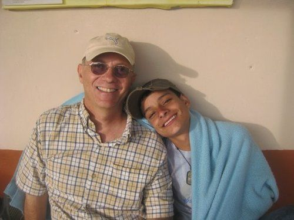
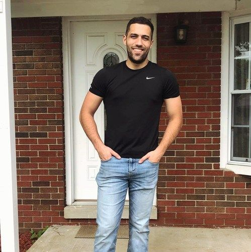
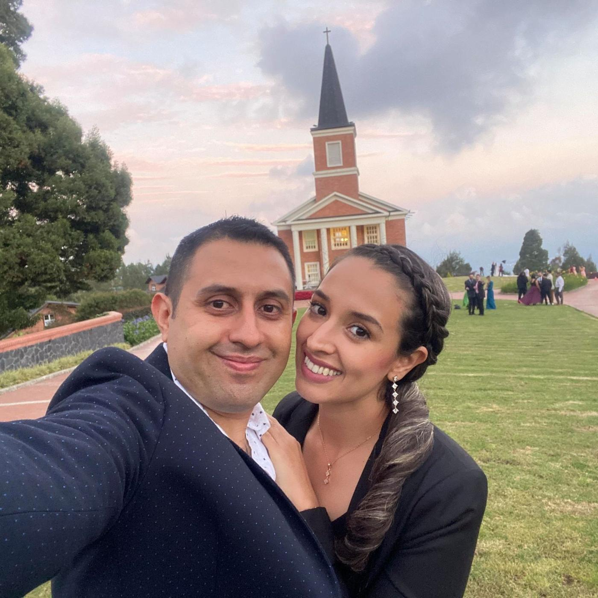

William Perrow
Executive Director
William Perrow is the founder of Open Arms Foundation. Alongside his wife, Wanda, he has served the children and people of Colombia for more than 30 years.
Contact WilliamLeadership

Executive Director
William Perrow is the founder of Open Arms Foundation. Alongside his wife, Wanda, he has served the children and people of Colombia for more than 30 years.
Contact William
USA Operations
Michael Perrow is the youngest son of William and Wanda Perrow and has been involved with the ministry since he was very young. He maintains the ministry’s media and runs the USA office.
Contact Michael
Missionaries & pastoral couple, Open Arms Church in Robledo
Carlos and Natalia are both graduates of Christ For the Nations Bible institute in Medellín. Carlos is from El Salvador and met Natalia in Medellín. Since 2019 they have served as the pastoral couple of the Open Arms Church in Robledo, connecting the church to the boys at the farm.
Contact Carlos